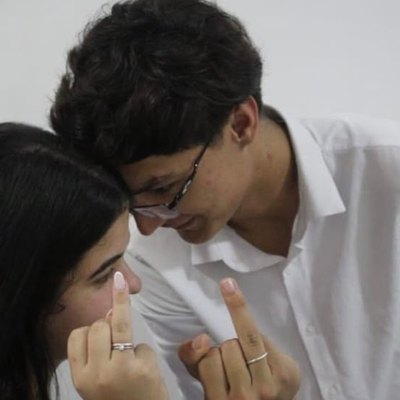

Nossa música
Aliança · Tribalistas
Existem muitas músicas de amor, mas a que me faz lembrar de você todos os dias é exatamente esta...
que diz “que se um dia eu te encontrar do jeito que eu sonhei, quem sabe ser seu par perfeito”
Nossas lembranças ❤️
Momentos que ficaram para sempre...
Algumas lembranças são tão especiais que merecem ser revividas em movimento. São pequenos pedaços da nossa história que continuam guardados no coração.
Se eu pudesse voltar no tempo, faria muitas coisas de uma maneira diferente. Mas jamais mudaria o fato de ter conhecido você.
Maeli, eu não espero que uma carta apague tudo o que aconteceu. Só espero que você saiba que meu arrependimento é sincero e que o carinho que sinto por você continua aqui.
Eu te amo, Maeli! ❤️